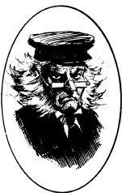

雅各布，泰勒 埃德蒙
雅各布，泰勒 埃德蒙（Jacobbi, Tanner Edmund）
异鬼修士, 混乱邪恶
力量： 10
敏捷： 13
体质： 15
智力： 9
灵知： 12
魅力： 7
防御等级： 3
移动力： 9
等级/生命骰数：2
生命值：16
零级命中率：17
攻击次数：2
攻击/伤害：爪（1d6/1d6）
特殊攻击：疾病和变形
特殊防御：只受银制或+1武器伤害
魔法抗力：特殊
战斗：作为一名异鬼修士，泰勒.雅各布是低等级冒险者的死敌。通常他会用他锋利到足以切断木头的爪子进行攻击。任何被爪子攻击到的角色都会受到1d6的伤害，且必须进行一次对抗毒素的豁免检定，失败则会受到一种类似败血病的疾病折磨，每天损失 1 点力量值和体质值。如果其中任意一项属性降为0，则受害人死亡。只有对受害者施展法术治愈疾病才能终止属性值的损失，已损失的属性将以每周一点的速度恢复。
和其他亡灵一样，雅各布免疫影响心灵与活物的法术。如果他冒着风险离开他的巢穴，雅各布将转变为一头尸妖。在他的巢穴范围内，雅各布具备特殊的抗性。（见下文）
虽然大部分异鬼修士能变化为多种形态，但雅各布只有两种形态。他的真身是眼窝里燃烧着冰冷火焰的骷髅，而另一面则是位枯瘦的老隐士。后一种形态的他皮肤褶皱，深灰色的头发散乱，身材干瘦。在这种形态下，他保持着通常全部的能力，并且在突袭检定中使他的敌人获得-2惩罚。
巢穴：在加拿大东海岸外，纽芬兰岛的巴斯克海峡以南的卡博特海峡，有一处终年环绕着暴风雨的群岛，它们对进出圣劳伦斯湾的船只构成了不小的威胁。在群岛最大的一块岛屿上，有着一座废旧的灯塔和修道院。这里曾经是神圣的教会据点，如今却沦为了泰勒.雅各布的巢穴。
在修道院和灯塔的范围内，雅各比拥有强大的力量。他对驱散免疫；他不能被任何死灵学派或死灵领域的魔法所影响；他能够以每个战斗轮2点的速度再生损失的生命值。所有在雅各布比巢穴范围内死亡的生物都会在1d4回合内作为僵尸在他的指挥下重新复活。正因如此，这个肮脏的异鬼修士组建了一个由大约25个僵尸组成的团体，为他服务。
背景：十七世纪末，在破碎的离岛群中最大的一块岛屿上，工人努力克服了恶劣的天气与糟糕的地形，而成功建起了一座灯塔和修道院。此后不久，25名圣尼古拉斯之火教团的成员开始在岛上定居。
其中一名叫泰勒.雅各布的年轻僧侣，他是第一次参加教团内严苛的修道生活。在1775年1月的一个暴风雨之夜，他负责在灯塔上看守。狂风撕扯着深黑色的海面，仿佛永无止境的暴风雨之夜里伸手不见五指。雅各布坐在自己的岗位上维护灯塔，看守海面。然而，单调的工作令他昏昏欲睡，不久以后，雅各布就伴着海风沉沉睡去。
大约一小时不到，灯塔的光就在风雨中熄灭了。此时，英国护卫舰"光辉"号在不远处的风暴里浮沉。这艘开往新英格兰的船只，注定在群岛的岩石海岸上结束她的旅程。当光辉号在岸边搁浅并撞的支离破碎时，其装载的黑火药被点燃，并且发生了一场大爆炸。大火席卷了整座岛屿，摧毁了修道院并杀死了修道院内的全部居民。
对于死在这场悲剧中的雅各布而言，这只是他无尽痛苦生涯的开始。生前的他并不是一个邪恶的人，只是个立下了誓言却无法遵守，活在内心不安阴影下的可怜虫。在死后，他发现如今的自己不得不在他的荒岛上等待下一艘搁浅船只的到来。生前的他可能还会同情这些遇难者，但作为一名异鬼修士，他的内心只剩下了永远的仇恨。所有踏上荒岛的搁浅者都会被他视为敌人。毕竟，不正是这些外来者给他的兄弟们带来了死亡和毁灭吗？
